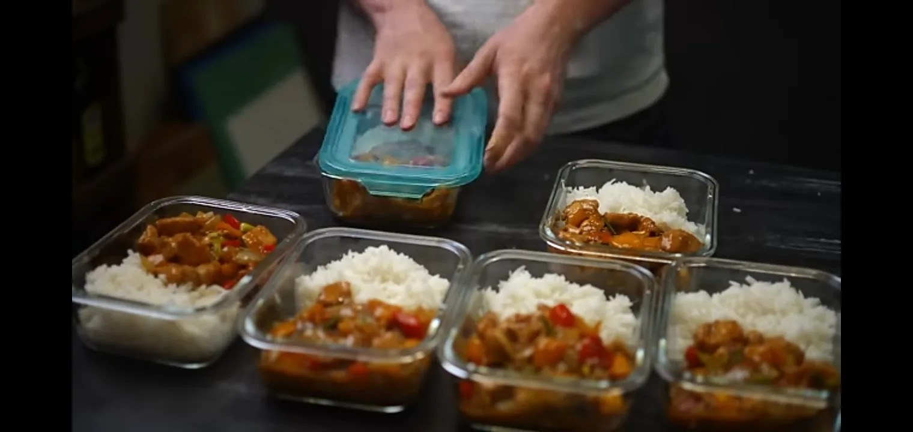
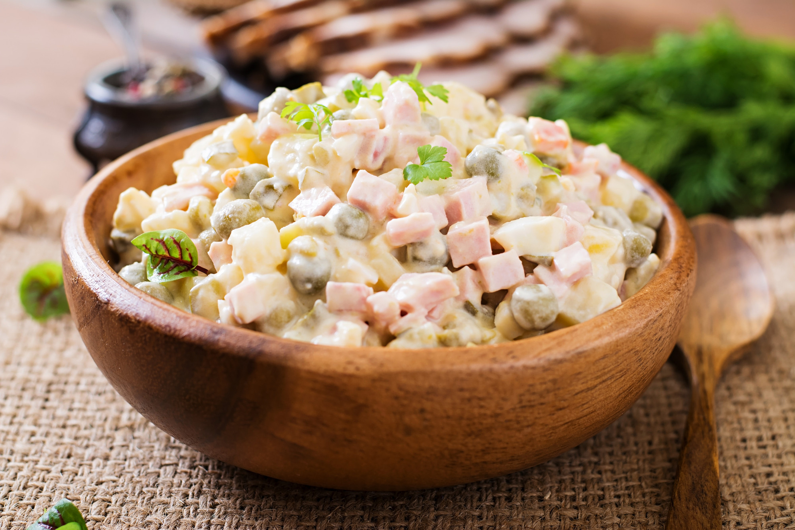
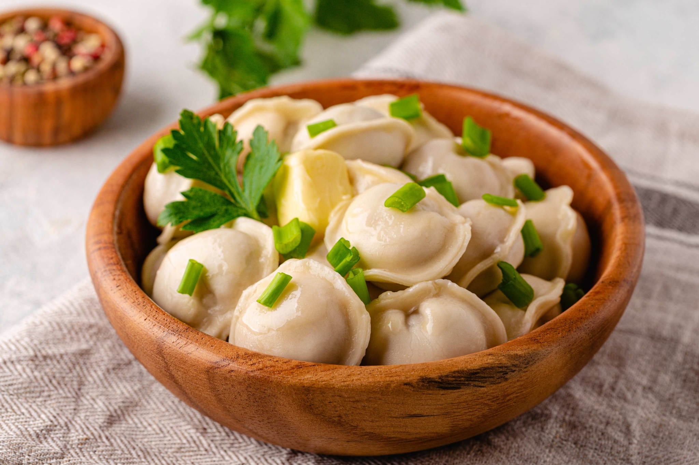
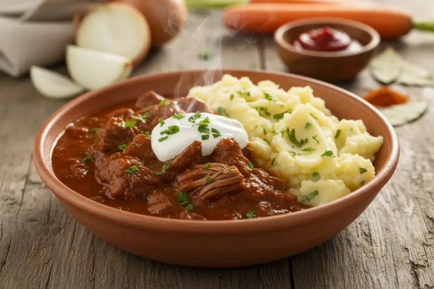
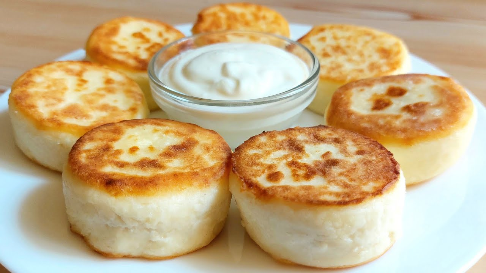
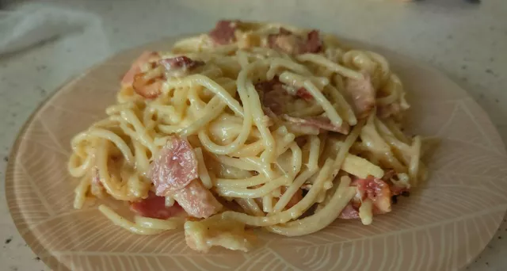

Все рецепты

Курица в кисло-сладком соусе
Классика китайской кухни

Классический оливье
Любимый всеми салат

Домашние пельмени
Сочные и ароматные

Гуляш «как в столовке»
Сытное второе блюдо

Сырники
Нежный завтрак

Карбонара
Упрощённая, без сливок